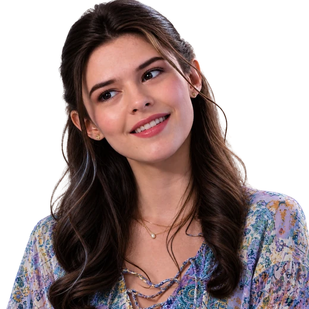
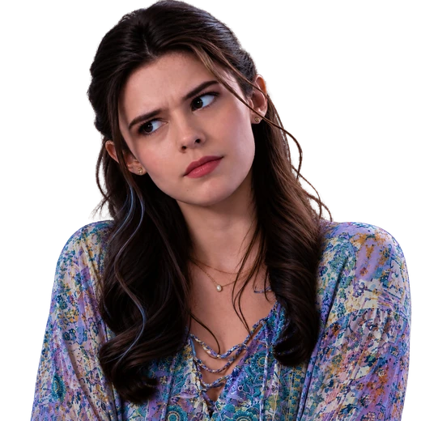
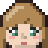

Nia Nal
Nia Nal é repórter da CatCo e colega da Lucy. Escreve sobre a cidade, anota sonhos num caderno e é a anfitriã da Festa das Flores.
Rotina
Dias úteis
| Hora | Lugar |
|---|---|
| 6h | Em casa |
| 9h | CatCo Worldwide Media |
| 17h30 | Bayside Books |
| 21h | Em casa |
Fim de semana
| Hora | Lugar |
|---|---|
| 6h | Em casa |
| 10h | Café Grão Nobre |
| 14h | Bayside Books |
| 20h | Em casa |
Presentes
No aniversário (5 de Verão), o presente vale mais: amado ×5, gostou ×3 e neutro ×2.
| Reação | Itens |
|---|---|
| Ama +80 pontos | |
| Gosta +45 pontos | |
| Neutro +20 pontos | Todo o resto (coletáveis e itens comuns) |
| Não gosta −20 pontos |
Eventos de coração
| Corações | Evento | Onde e quando | O que ganha |
|---|---|---|---|
| ♥ 3 | Conversa | Na próxima conversa | Fonte da CatCo: a ação LCORP ganha impulso extra. |
| ♥ 5 | Nia: o sonho | CatCo Worldwide Media, das 16h às 22h | — |
Falas
“Oi! Nia Nal, da CatCo. A Lucy fala de você. Muito. Não que ela admita.”
Logo que se conhecem
“Às vezes eu sonho com as notícias antes delas acontecerem. Estranho, né? Esquece que eu disse isso.”
Com amizade
“Você é uma das poucas pessoas poderosas que eu realmente admiro, Letícia.”
Bem próximas
Mensagens no celular
Com 2 corações, ela manda mensagens de vez em quando (app Mensagens, tecla T). Responder dá amizade e carisma.
Ver as 6 mensagens e as respostas
Sonhei com borboletas de novo. Toda vez que eu sonho com isso, alguma coisa boa acontece. Fica de olho!
- Vou ficar de olho! Me conta se acontecer. → Você vai ser a primeira a saber. Depois do Barry. Ele pergunta todo dia.
- Seus sonhos sempre acertam. → Quase sempre. Teve aquele do pinguim de chapéu. Ainda estou esperando.
- Algo bom já aconteceu: sua mensagem. → Ownnn. Viu? Os sonhos nunca erram.
Terminei a matéria sobre a Fundação Luthor. Ficou bonita. Você vai chorar. Avisando antes.
- Já estou com o lenço na mão. → Pega dois. Tem foto da praça no final.
- Me manda antes de publicar? → Mando. Mas só pra você ver, não pra mudar. Ética, Letícia.
- Obrigada por contar essa história. → Ela é bonita porque é verdade. Isso facilita muito o meu trabalho.
O Barry tropeçou no tripé de novo. Ele está bem. O tripé, nem tanto.
- Coitado do tripé! E do Barry. → O Barry já está rindo. O tripé está de luto.
- Vou dar um tripé novo de presente. → Sério? Ele vai chorar. De novo. Ele chora fácil.
- Alguém filmou? → Eu. Claro. Está guardado para o aniversário dele.
Sonhei com um farol que falava. Ele disse uma frase muito sábia, mas eu esqueci quando acordei.
- Ele vai repetir na próxima noite. → Vou dormir com o caderno do lado. Por precaução.
- Inventa uma frase e diz que foi ele. → Isso é jornalismo duvidoso, Letícia. Gostei.
- Faróis são sábios mesmo. → Eles ficam parados olhando o mar. Claro que são.
A Lucy está cantarolando na redação. A Lucy NUNCA cantarola. Alguém sabe alguma coisa?
- Não faço ideia. → Sei. Vou investigar. Sou repórter também.
- Talvez ela esteja feliz. → Feliz eu já vi. Isso é outro nível.
- Pergunta para ela. → Perguntei. Ela disse 'nada'. Nada nunca é nada.
Fiz uma matéria sobre os vagalumes do Bosque Bayside. Fui de noite e eles fizeram um show só pra mim.
- Me leva da próxima vez. → Combinado. Leva o casaco, o bosque é friozinho.
- Quero ler essa matéria. → Sai amanhã. Com foto do Barry, se ele chegar na hora.
- Que bonito, Nia. → A cidade tem dessas coisas. É só olhar com calma.
Retratos


| Luthor Corp | |
|---|---|
| CatCo | |
| Moradores | |
| Conti Moretti |  Meredith |
| De fora da cidade |